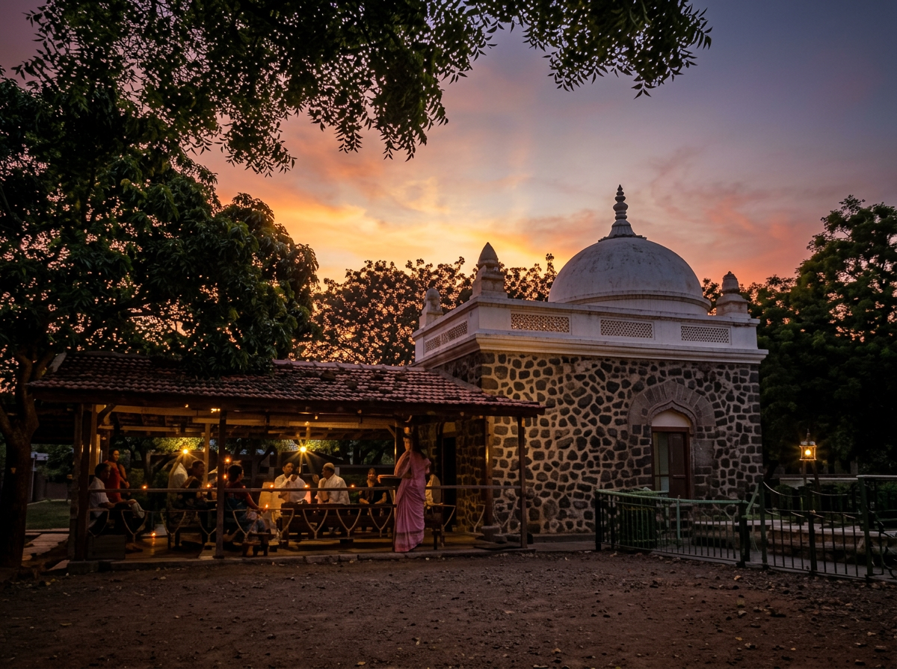

A village with deep spiritual and cultural roots.

Arangaon (Meherabad) is a historically significant village, known across India as the spiritual home of Meher Baba, who lived and worked here for many decades. Pilgrims from around the world visit Meherabad to experience its peaceful atmosphere and rich spiritual legacy. Beyond its spiritual importance, the village has a long agricultural tradition, vibrant local culture, and a strong sense of community that has been passed down through generations.